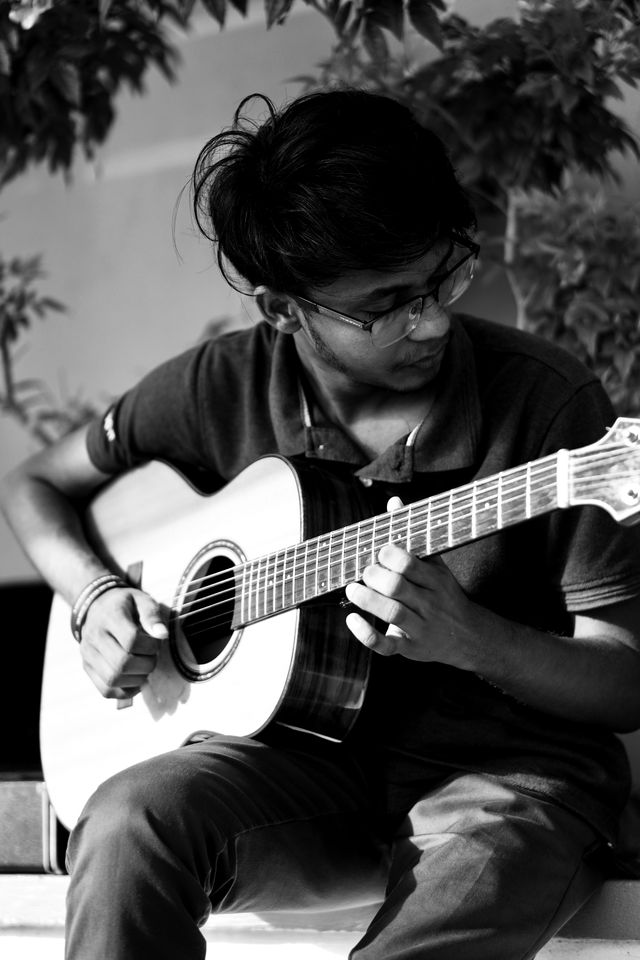
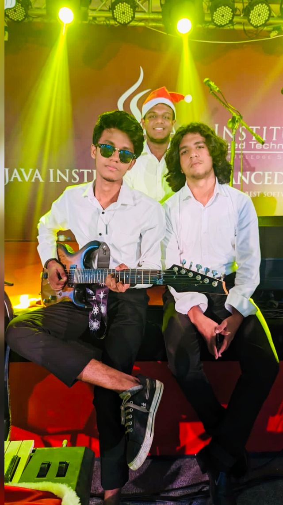
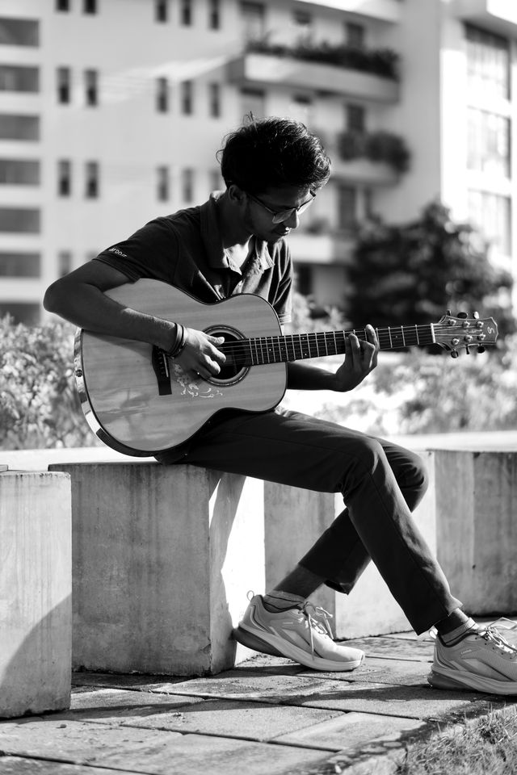
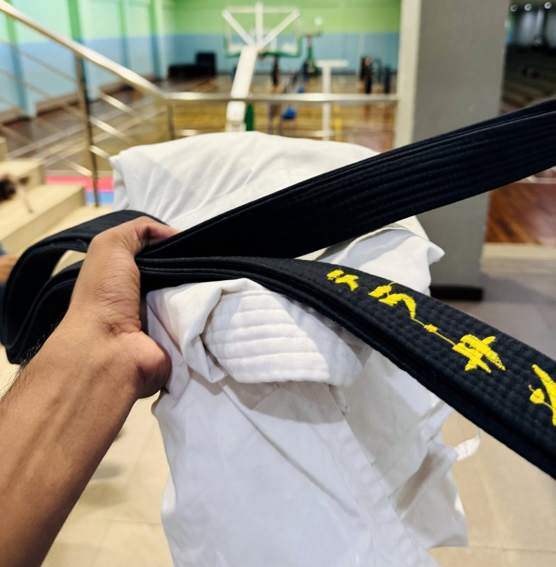

Beyond the Work
Scales, Stances & Sentences
Three ways of practising the same idea — repetition, until it holds.
Three ways of practising the same idea — repetition, until it holds.
Former Lead Guitarist, Music Circle — Java Institute for Advanced Technology, a private institution in Sri Lanka.
Mostly acoustic, mostly alone — the stage photo is the exception.



The practice began years before the code. A black belt in Shotokan Karate isn't an end point; it's a foundation in how to repeat an action hundreds of times until unnecessary tension disappears and pure kinetic alignment remains.

Crime and Punishment began a lasting engagement with 19th-century literature. Dostoevsky dismantles moral rationalization with extreme psychological precision — asking how individuals justify actions under self-imposed theories.